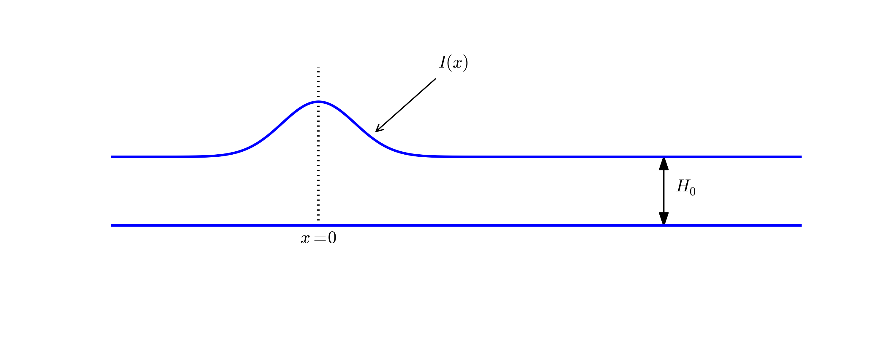
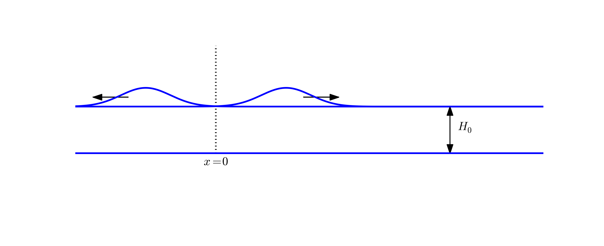

Exercises
Exercise 15: Simulate waves on a non-homogeneous string
Simulate waves on a string that consists of two materials with different density. The tension in the string is constant, but the density has a jump at the middle of the string. Experiment with different sizes of the jump and produce animations that visualize the effect of the jump on the wave motion.
Hint.
According to the section Waves on a string,
the density enters the mathematical model as \( \varrho \) in
\( \varrho u_{tt} = Tu_{xx} \), where \( T \) is the string tension. Modify, e.g., the
wave1D_u0v.py code to incorporate the tension and two density values.
Make a mesh function rho with density values at each spatial mesh point.
A value for the tension may be 150 N. Corresponding density values can
be computed from the wave velocity estimations in the guitar function
in the wave1D_u0v.py file.
Filename: wave1D_u0_sv_discont.py.
Exercise 16: Simulate damped waves on a string
Formulate a mathematical model for damped waves on a string. Use data from the section Running a case, and tune the damping parameter so that the string is very close to the rest state after 15 s. Make a movie of the wave motion. Filename:wave1D_u0_sv_damping.py.
Exercise 17: Simulate elastic waves in a rod
A hammer hits the end of an elastic rod. The exercise is to simulate the resulting wave motion using the model (76) from the section Elastic waves in a rod. Let the rod have length \( L \) and let the boundary \( x=L \) be stress free so that \( \sigma_{xx}=0 \), implying that \( \partial u/\partial x=0 \). The left end \( x=0 \) is subject to a strong stress pulse (the hammer), modeled as $$ \sigma_{xx}(t) = \left\lbrace\begin{array}{ll} S,& 0 < t \leq t_s,\\ 0, & t > t_s \end{array}\right. $$ The corresponding condition on \( u \) becomes \( u_x= S/E \) for \( t\leq t_s \) and zero afterwards (recall that \( \sigma_{xx} = Eu_x \)). This is a non-homogeneous Neumann condition, and you will need to approximate this condition and combine it with the scheme (the ideas and manipulations follow closely the handling of a non-zero initial condition \( u_t=V \) in wave PDEs or the corresponding second-order ODEs for vibrations). Filename:wave_rod.py.
Exercise 18: Simulate spherical waves
Implement a model for spherically symmetric waves using the method described in the section Spherical waves. The boundary condition at \( r=0 \) must be \( \partial u/\partial r=0 \), while the condition at \( r=R \) can either be \( u=0 \) or a radiation condition as described in Problem 21: Implement open boundary conditions. The \( u=0 \) condition is sufficient if \( R \) is so large that the amplitude of the spherical wave has become insignificant. Make movie(s) of the case where the source term is located around \( r=0 \) and sends out pulses $$ f(r,t) = \left\lbrace\begin{array}{ll} Q\exp{(-\frac{r^2}{2\Delta r^2})}\sin\omega t,& \sin\omega t\geq 0\\ 0, & \sin\omega t < 0 \end{array}\right. $$ Here, \( Q \) and \( \omega \) are constants to be chosen.
Hint.
Use the program wave1D_u0v.py as a starting point. Let solver
compute the \( v \) function and then set \( u=v/r \). However,
\( u=v/r \) for \( r=0 \) requires special treatment. One possibility is
to compute u[1:] = v[1:]/r[1:] and then set u[0]=u[1]. The latter
makes it evident that \( \partial u/\partial r = 0 \) in a plot.
Filename: wave1D_spherical.py.
Exercise 19: Explain why numerical noise occurs
The experiments performed in Exercise 8: Send pulse waves through a layered medium shows considerable numerical noise in the form of non-physical waves, especially for \( s_f=4 \) and the plug pulse or the half a "cosinehat" pulse. The noise is much less visible for a Gaussian pulse. Run the case with the plug and half a "cosinehat" pulses for \( s_f=1 \), \( C=0.9, 0.25 \), and \( N_x=40,80,160 \). Use the numerical dispersion relation to explain the observations. Filename:pulse1D_analysis.pdf.
Exercise 20: Investigate harmonic averaging in a 1D model
Harmonic means are often used if the wave velocity is non-smooth or discontinuous. Will harmonic averaging of the wave velocity give less numerical noise for the case \( s_f=4 \) in Exercise 8: Send pulse waves through a layered medium? Filenames:pulse1D_harmonic.pdf, pulse1D_harmonic.py.
Problem 21: Implement open boundary conditions
To enable a wave to leave the computational domain and travel undisturbed through the boundary \( x=L \), one can in a one-dimensional problem impose the following condition, called a radiation condition or open boundary condition: $$ \begin{equation} \frac{\partial u}{\partial t} + c\frac{\partial u}{\partial x} = 0\tp \tag{101} \end{equation} $$ The parameter \( c \) is the wave velocity.
Show that (101) accepts a solution \( u = g_R(x-ct) \) (right-going wave), but not \( u = g_L(x+ct) \) (left-going wave). This means that (101) will allow any right-going wave \( g_R(x-ct) \) to pass through the boundary undisturbed.
A corresponding open boundary condition for a left-going wave through \( x=0 \) is $$ \begin{equation} \frac{\partial u}{\partial t} - c\frac{\partial u}{\partial x} = 0\tp \tag{102} \end{equation} $$
a) A natural idea for discretizing the condition (101) at the spatial end point \( i=N_x \) is to apply centered differences in time and space: $$ \begin{equation} [D_{2t}u + cD_{2x}u =0]^n_{i},\quad i=N_x\tp \tag{103} \end{equation} $$ Eliminate the fictitious value \( u_{N_x+1}^n \) by using the discrete equation at the same point.
The equation for the first step, \( u_i^1 \), is in principle also affected, but we can then use the condition \( u_{N_x}=0 \) since the wave has not yet reached the right boundary.
b) A much more convenient implementation of the open boundary condition at \( x=L \) can be based on an explicit discretization $$ \begin{equation} [D^+_tu + cD_x^- u = 0]_i^n,\quad i=N_x\tp \tag{104} \end{equation} $$ From this equation, one can solve for \( u^{n+1}_{N_x} \) and apply the formula as a Dirichlet condition at the boundary point. However, the finite difference approximations involved are of first order.
Implement this scheme for a wave equation \( u_{tt}=c^2u_{xx} \) in a domain \( [0,L] \), where you have \( u_x=0 \) at \( x=0 \), the condition (101) at \( x=L \), and an initial disturbance in the middle of the domain, e.g., a plug profile like $$ u(x,0) = \left\lbrace\begin{array}{ll} 1,& L/2-\ell \leq x \leq L/2+\ell,\\ 0,\hbox{otherwise}\end{array}\right. $$ Observe that the initial wave is split in two, the left-going wave is reflected at \( x=0 \), and both waves travel out of \( x=L \), leaving the solution as \( u=0 \) in \( [0,L] \). Use a unit Courant number such that the numerical solution is exact. Make a movie to illustrate what happens.
Because this simplified implementation of the open boundary condition works, there is no need to pursue the more complicated discretization in a).
Hint. Modify the solver function in wave1D_dn.py.
c) Add the possibility to have either \( u_x=0 \) or an open boundary condition at the left boundary. The latter condition is discretized as $$ \begin{equation} [D^+_tu - cD_x^+ u = 0]_i^n,\quad i=0, \tag{105} \end{equation} $$ leading to an explicit update of the boundary value \( u^{n+1}_0 \).
The implementation can be tested with a Gaussian function as initial condition: $$ g(x;m,s) = \frac{1}{\sqrt{2\pi}s}e^{-\frac{(x-m)^2}{2s^2}}\tp$$ Run two tests:
- Disturbance in the middle of the domain, \( I(x)=g(x;L/2,s) \), and open boundary condition at the left end.
- Disturbance at the left end, \( I(x)=g(x;0,s) \), and \( u_x=0 \) as symmetry boundary condition at this end.
d) In 2D and 3D it is difficult to compute the correct wave velocity normal to the boundary, which is needed in generalizations of the open boundary conditions in higher dimensions. Test the effect of having a slightly wrong wave velocity in (104). Make a movies to illustrate what happens.
Filename: wave1D_open_BC.py.
Remarks
The condition (101) works perfectly in 1D when \( c \) is known. In 2D and 3D, however, the condition reads \( u_t + c_x u_x + c_y u_y=0 \), where \( c_x \) and \( c_y \) are the wave speeds in the \( x \) and \( y \) directions. Estimating these components (i.e., the direction of the wave) is often challenging. Other methods are normally used in 2D and 3D to let waves move out of a computational domain.
Exercise 22: Implement periodic boundary conditions
It is frequently of interest to follow wave motion over large distances and long times. A straightforward approach is to work with a very large domain, but might lead to a lot of computations in areas of the domain where the waves cannot be noticed. A more efficient approach is to let a right-going wave out of the domain and at the same time let it enter the domain on the left. This is called a periodic boundary condition.The boundary condition at the right end \( x=L \) is an open boundary condition (see Problem 21: Implement open boundary conditions) to let a right-going wave out of the domain. At the left end, \( x=0 \), we apply, in the beginning of the simulation, either a symmetry boundary condition (see Problem 7: Explore symmetry boundary conditions) \( u_x=0 \), or an open boundary condition.
This initial wave will split in two and either reflected or transported out of the domain at \( x=0 \). The purpose of the exercise is to follow the right-going wave. We can do that with a periodic boundary condition. This means that when the right-going wave hits the boundary \( x=L \), the open boundary condition lets the wave out of the domain, but at the same time we use a boundary condition on the left end \( x=0 \) that feeds the outgoing wave into the domain again. This periodic condition is simply \( u(0)=u(L) \). The switch from \( u_x=0 \) or an open boundary condition at the left end to a periodic condition can happen when \( u(L,t)>\epsilon \), where \( \epsilon =10^{-4} \) might be an appropriate value for determining when the right-going wave hits the boundary \( x=L \).
The open boundary conditions can conveniently be discretized as
explained in Problem 21: Implement open boundary conditions. Implement the
described type of boundary conditions and test them on two different
initial shapes: a plug \( u(x,0)=1 \) for \( x\leq 0.1 \), \( u(x,0)=0 \) for
\( x>0.1 \), and a Gaussian function in the middle of the domain:
\( u(x,0)=\exp{(-\frac{1}{2}(x-0.5)^2/0.05)} \). The domain is the unit
interval \( [0,1] \). Run these two shapes for Courant numbers 1 and
0.5. Assume constant wave velocity. Make movies of the four cases.
Reason why the solutions are correct.
Filename: periodic.py.
Problem 23: Earthquake-generated tsunami over a subsea hill
A subsea earthquake leads to an immediate lift of the water surface, see Figure 10. The lifted water surface splits into two tsunamis, one traveling to the right and one to the left, as depicted in Figure 11. Since tsunamis are normally very long waves, compared to the depth, with a small amplitude, compared to the wave length, the wave equation model described in the section The linear shallow water equations is relevant: $$ \eta_{tt} = (gH(x)\eta_x)_x,$$ where \( g \) is the acceleration of gravity, and \( H(x) \) is the still water depth.
Figure 10: Sketch of initial water surface due to a subsea earthquake.

Figure 11: An initial surface elevation is split into two waves.

To simulate the right-going tsunami, we can impose a symmetry boundary at \( x=0 \): \( \partial\eta\ \partial x =0 \). We then simulate the wave motion in \( [0,L] \). Unless the ocean ends at \( x=L \), the waves should travel undisturbed through the boundary \( x=L \). A radiation condition as explained in Problem 21: Implement open boundary conditions can be used for this purpose. Alternatively, one can just stop the simulations before the wave hits the boundary at \( x=L \). In that case it does not matter what kind of boundary condition we use at \( x=L \). Imposing \( \eta =0 \) and stopping the simulations when \( |\eta_i^n| > \epsilon \), \( i=N_x-1 \), is a possibility (\( \epsilon \) is a small parameter).
The shape of the initial surface can be taken as a Gaussian function, $$ \begin{equation} I(x;I_0,I_a,I_m,I_s) = I_0 + I_a\exp{\left(-\left(\frac{x-I_m}{I_s}\right)^2\right)}, \end{equation} $$ with \( I_m=0 \) reflecting the location of the peak of \( I(x) \) and \( I_s \) being a measure of the width of the function \( I(x) \) (\( I_s \) is \( \sqrt{2} \) times the standard deviation of the familiar normal distribution curve).
Now we extend the problem with a hill at the sea bottom, see Figure 12. The wave speed \( c=\sqrt{gH(x)} = \sqrt{g(H_0-B(x))} \) will then be reduced in the shallow water above the hill.
Figure 12: Sketch of an earthquake-generated tsunami passing over a subsea hill.

One possible form of the hill is a Gaussian function, $$ \begin{equation} B(x;B_0,B_a,B_m,B_s) = B_0 + B_a\exp{\left(-\left(\frac{x-B_m}{B_s}\right)^2\right)}, \tag{106} \end{equation} $$ but many other shapes are also possible, e.g., a "cosine hat" where $$ \begin{equation} B(x; B_0, B_a, B_m, B_s) = B_0 + B_a\cos{\left( \pi\frac{x-B_m}{2B_s}\right)}, \tag{107} \end{equation} $$ when \( x\in [B_m - B_s, B_m + B_s] \) while \( B=B_0 \) outside this interval.
Also an abrupt construction may be tried: $$ \begin{equation} B(x; B_0, B_a, B_m, B_s) = B_0 + B_a, \tag{108} \end{equation} $$ for \( x\in [B_m - B_s, B_m + B_s] \) while \( B=B_0 \) outside this interval.
The wave1D_dn_vc.py program can be used as starting point for the implementation. Visualize both the bottom topography and the water surface elevation in the same plot. Allow for a flexible choice of bottom shape: (106), (107), (108), or \( B(x)=B_0 \) (flat).
The purpose of this problem is to explore the quality of the numerical
solution \( \eta^n_i \) for different shapes of the bottom obstruction.
The "cosine hat" and the box-shaped hills have abrupt changes in the
derivative of \( H(x) \) and are more likely to generate numerical noise
than the smooth Gaussian shape of the hill. Investigate if this is true.
Filenames: tsunami1D_hill.py, tsunami1D_hill.pdf.
Problem 24: Earthquake-generated tsunami over a 3D hill
This problem extends Problem 23: Earthquake-generated tsunami over a subsea hill to a three-dimensional wave phenomenon, governed by the 2D PDE (95). We assume that the earthquake arise from a fault along the line \( x=0 \) in the \( xy \)-plane so that the initial lift of the surface can be taken as \( I(x) \) in Problem 23: Earthquake-generated tsunami over a subsea hill. That is, a plane wave is propagating to the right, but will experience bending because of the bottom.The bottom shape is now a function of \( x \) and \( y \). An "elliptic" Gaussian function in two dimensions, with its peak at \( (B_{mx}, B_{my}) \), generalizes (106): $$ \begin{equation} B(x;B_0,B_a,B_{mx}, B_{my} ,B_s, b) = B_0 + B_a\exp{\left(-\left(\frac{x-B_{mx}}{B_s}\right)^2 -\left(\frac{y-B_{my}}{bB_s}\right)^2\right)}, \tag{109} \end{equation} $$ where \( b \) is a scaling parameter: \( b=1 \) gives a circular Gaussian function with circular contour lines, while \( b\neq 1 \) gives an elliptic shape with elliptic contour lines.
The "cosine hat" (107) can also be generalized to $$ \begin{equation} B(x; B_0, B_a, B_{mx}, B_{my}, B_s) = B_0 + B_a\cos{\left( \pi\frac{x-B_{mx}}{2B_s}\right)} \cos{\left( \pi\frac{y-B_{my}}{2B_s}\right)}, \tag{110} \end{equation} $$ when \( 0 \leq \sqrt{x^2+y^2} \leq B_s \) and \( B=B_0 \) outside this circle.
A box-shaped obstacle means that $$ \begin{equation} B(x; B_0, B_a, B_m, B_s, b) = B_0 + B_a \tag{111} \end{equation} $$ for \( x \) and \( y \) inside a rectangle $$ B_{mx}-B_s \leq x \leq B_{mx} + B_s,\quad B_{my}-bB_s \leq y \leq B_{my} + bB_s, $$ and \( B=B_0 \) outside this rectangle. The \( b \) parameter controls the rectangular shape of the cross section of the box.
Note that the initial condition and the listed bottom shapes are symmetric around the line \( y=B_{my} \). We therefore expect the surface elevation also to be symmetric with respect to this line. This means that we can halve the computational domain by working with \( [0,L_x]\times [0, B_{my}] \). Along the upper boundary, \( y=B_{my} \), we must impose the symmetry condition \( \partial \eta/\partial n=0 \). Such a symmetry condition (\( -\eta_x=0 \)) is also needed at the \( x=0 \) boundary because the initial condition has a symmetry here. At the lower boundary \( y=0 \) we also set a Neumann condition (which becomes \( -\eta_y=0 \)). The wave motion is to be simulated until the wave hits the reflecting boundaries where \( \partial\eta/\partial n =\eta_x =0 \) (one can also set \( \eta =0 \) - the particular condition does not matter as long as the simulation is stopped before the wave is influenced by the boundary condition).
Visualize the surface elevation. Investigate how different hill shapes,
different sizes of the water gap above the hill, and different
resolutions \( \Delta x = \Delta y = h \) and \( \Delta t \) influence
the numerical quality of the solution.
Filenames: tsunami2D_hill.py, tsunami2D_hill.pdf.
Problem 25: Investigate Matplotlib for visualization
Play with native Matplotlib code for visualizing 2D solutions of the wave equation with variable wave velocity. See if there are effective ways to visualize both the solution and the wave velocity. Filename:tsunami2D_hill_mpl.py.
Problem 26: Investigate visualization packages
Create some fancy 3D visualization of the water waves and the subsea hill in Problem 24: Earthquake-generated tsunami over a 3D hill. Try to make the hill transparent. Possible visualization tools are Filename:tsunami2D_hill_viz.py.
Problem 27: Implement loops in compiled languages
Extend the program from Problem 24: Earthquake-generated tsunami over a 3D hill such that the loops over mesh points, inside the time loop, are implemented in compiled languages. Consider implementations in Cython, Fortran viaf2py, C via Cython, C via f2py, C/C++ via Instant,
and C/C++ via scipy.weave.
Perform efficiency experiments to investigate the relative performance
of the various implementations. It is often advantageous to normalize
CPU times by the fastest method on a given mesh.
Filename: tsunami2D_hill_compiled.py.
Exercise 28: Simulate seismic waves in 2D
The goal of this exercise is to simulate seismic waves using the PDE model (84) in a 2D \( xz \) domain with geological layers. Introduce \( m \) horizontal layers of thickness \( h_i \), \( i=0,\ldots,m-1 \). Inside layer number \( i \) we have a vertical wave velocity \( c_{z,i} \) and a horizontal wave velocity \( c_{h,i} \). Make a program for simulating such 2D waves. Test it on a case with 3 layers where $$ c_{z,0}=c_{z,1}=c_{z,2},\quad c_{h,0}=c_{h,2},\quad c_{h,1} \ll c_{h,0} \tp $$ Let \( s \) be a localized point source at the middle of the Earth's surface (the upper boundary) and investigate how the resulting wave travels through the medium. The source can be a localized Gaussian peak that oscillates in time for some time interval. Place the boundaries far enough from the expanding wave so that the boundary conditions do not disturb the wave. Then the type of boundary condition does not matter, except that we physically need to have \( p=p_0 \), where \( p_0 \) is the atmospheric pressure, at the upper boundary. Filename:seismic2D.py.
Project 29: Model 3D acoustic waves in a room
The equation for sound waves in air is derived in the section Sound waves in liquids and gases and reads $$ p_{tt} = c^2\nabla^2 p,$$ where \( p(x,y,z,t) \) is the pressure and \( c \) is the speed of sound, taken as 340 m/s. However, sound is absorbed in the air due to relaxation of molecules in the gas. A model for simple relaxation, valid for gases consisting only of one type of molecules, is a term \( c^2\tau_s\nabla^2 p_t \) in the PDE, where \( \tau_s \) is the relaxation time. If we generate sound from, e.g., a loudspeaker in the room, this sound source must also be added to the governing equation.The PDE with the mentioned type of damping and source then becomes $$ \begin{equation} p_tt = c^2\nabla^p + c^2\tau_s\nabla^2 p_t + f, \end{equation} $$ where \( f(x,y,z,t) \) is the source term.
The walls can absorb some sound. A possible model is to have a "wall layer" (thicker than the physical wall) outside the room where \( c \) is changed such that some of the wave energy is reflected and some is absorbed in the wall. The absorption of energy can be taken care of by adding a damping term \( bp_t \) in the equation: $$ \begin{equation} p_tt + bp_t = c^2\nabla^p + c^2\tau_s\nabla^2 p_t + f\tp \end{equation} $$ Typically, \( b=0 \) in the room and \( b>0 \) in the wall. A discontinuity in \( b \) or \( c \) will give rise to reflections. It can be wise to use a constant \( c \) in the wall to control reflections because of the discontinuity between \( c \) in the air and in the wall, while \( b \) is gradually increased as we go into the wall to avoid reflections because of rapid changes in \( b \). At the outer boundary of the wall the condition \( p=0 \) or \( \partial p/\partial n=0 \) can be imposed. The waves should anyway be approximately dampened to \( p=0 \) this far out in the wall layer.
There are two strategies for discretizing the \( \nabla^2 p_t \) term: using a center difference between times \( n+1 \) and \( n-1 \) (if the equation is sampled at level \( n \)), or use a one-sided difference based on levels \( n \) and \( n-1 \). The latter has the advantage of not leading to any equation system, while the former is second-order accurate as the scheme for the simple wave equation \( p_tt = c^2\nabla^2 p \). To avoid an equation system, go for the one-sided difference such that the overall scheme becomes explicit and only of first order in time.
Develop a 3D solver for the specified PDE and introduce a wall layer.
Test the solver with the method of manufactured solutions. Make some
demonstrations where the wall reflects and absorbs the waves (reflection
because of discontinuity in \( b \) and absorption because of growing \( b \)).
Experiment with the impact of the \( \tau_s \) parameter.
Filename: acoustics.py.
Project 30: Solve a 1D transport equation
We shall study the wave equation $$ \begin{equation} u_t + cu_x = 0,\quad x\in (0,L],\ t\in (0, T], \tag{112} \end{equation} $$ with initial condition $$ \begin{equation} u(x,0) = I(x),\quad x\in [0,L], \end{equation} $$ and one periodic boundary condition $$ \begin{equation} u(0,t) = u(L,t) \tp \end{equation} $$ This boundary condition means that what goes out of the domain at \( x=L \) comes in at \( x=0 \). Roughly speaking, we need only one boundary condition because of the spatial derivative is of first order only.Physical interpretation. The parameter \( c \) can be constant or variable, \( c=c(x) \). The equation (112) arises in transport problems where a quantity \( u \), which could be temperature or concentration of some contaminant, is transported with the velocity \( c \) of a fluid. In addition to the transport imposed by "travelling with the fluid", \( u \) may also be transported by diffusion (such as heat conduction or Fickian diffusion), but we have in the model \( u_t + cu_x \) assumed that diffusion effects are negligible, which they often are.
A widely used numerical scheme for (112) applies a forward difference in time and a backward difference in space when \( c>0 \): $$ \begin{equation} [D_t^+ u + cD_x^-u = 0]_i^n \tag{113} \tp \end{equation} $$ For \( c < 0 \) we use a forward difference in space: \( [cD_x^+u]_i^n \).
We shall hereafter assume that \( =c(x)>0 \).
To compute (118) we need to integrate \( 1/c \) to obtain \( C \) and then compute the inverse of \( C \).
The inverse function computation can be easily done if we first think discretely. Say we have some function \( y=g(x) \) and seeks its inverse. Plotting \( (x_i,y_i) \), where \( y_i=g(x_i) \) for some mesh points \( x_i \), displays \( g \) as a function of \( x \). The inverse function is simply \( x \) as a function of \( g \), i.e., the curve with points \( (y_i,x_i) \). We can therefore quickly compute points at the curve of the inverse function. One way of extending these points to a continuous function is to assume a linear variation (known as linear interpolation) between the points (which actually means to draw straight lines between the points, exactly as done by a plotting program).
The function wrap2callable in scitools.std can take a set of points
and return a continuous function that corresponds to linear
variation between the points. The computation of the inverse of a
function \( g \) on \( [0,L] \) can then be done by
def inverse(g, domain, resolution=101):
x = linspace(domain[0], domain[L], resolution)
y = g(x)
from scitools.std import wrap2callable
g_inverse = wrap2callable((y, x))
return g_inverse
To compute \( C(x) \) we need to integrate \( 1/c \), which can be done by a Trapezoidal rule. Suppose we have computed \( C(x_i) \) and need to compute \( C(x_{i+1}) \). Using the Trapezoidal rule with \( m \) subintervals over the integration domain \( [x_i,x_{i+1}] \) gives $$ \begin{equation} C(x_{i+1}) = C(x_i) + \int_{x_i}^{x_{i+1}} \frac{dx}{c} \approx h\left( \half\frac{1}{c(x_i)} + \half\frac{1}{c(x_{i+1})} + \sum_{j=1}^{m-1} \frac{1}{c(x_i + jh)}\right), \tag{114} \end{equation} $$ where \( h=(x_{i+1}-x_i)/m \) is the length of the subintervals used for the integral over \( [x_i,x_{i+1}] \). We observe that (114) is a difference equation which we can solve by repeatedly applying (114) for \( i=0,1,\ldots,N_x-1 \) if a mesh \( x_0,x_,\ldots,x_{N_x} \) is prescribed. Note that \( C(0)=0 \).
a) Show that under the assumption of \( a=\hbox{const} \), $$ \begin{equation} u(x,t) = I(x - ct) \tag{115} \end{equation} $$ fulfills the PDE as well as the initial and boundary condition (provided \( I(0)=I(L) \)).
b) Set up a computational algorithm and implement it in a function. Assume \( a \) is constant and positive.
c) Test implementation by using the remarkable property that the numerical solution is exact at the mesh points if \( \Delta t = c^{-1}\Delta x \).
d) Make a movie comparing the numerical and exact solution for the following two choices of initial conditions: $$ \begin{equation} I(x) = \left\lbrack\sin\left(\pi\frac{x}{L}\right)\right\rbrack^{2n} \tag{116} \end{equation} $$ where \( n \) is an integer, typically \( n=5 \), and $$ \begin{equation} I(x) = \exp{\left( -\frac{(x-L/2)^2}{2\sigma2}\right)} \tp \end{equation} \tag{117} $$ Choose \( \Delta t = c^{-1}\Delta x, 0.9c^{-1}\Delta x, 0.5c^{-1}\Delta x \).
e) The performance of the suggested numerical scheme can be investigated by analyzing the numerical dispersion relation. Analytically, we have that the Fourier component $$ u(x,t) = e^{i(kx-\omega t)},$$ is a solution of the PDE if \( \omega = kc \). This is the analytical dispersion relation. A complete solution of the PDE can be built by adding up such Fourier components with different amplitudes, where the initial condition \( I \) determines the amplitudes. The solution \( u \) is then represented by a Fourier series.
A similar discrete Fourier component at \( (x_p,t_n) \) is $$ u_p^q = e^{i(kp\Delta x -\tilde\omega n\Delta t)},$$ where in general \( \tilde\omega \) is a function of \( k \), \( \Delta t \), and \( \Delta x \), and differs from the exact \( \omega =kc \).
Insert the discrete Fourier component in the numerical scheme and derive an expression for \( \tilde\omega \), i.e., the discrete dispersion relation. Show in particular that if the \( \Delta t/(c\Delta x)=1 \), the discrete solution coincides with the exact solution at the mesh points, regardless of the mesh resolution (!). Show that if the stability condition $$ \frac{\Delta t}{c\Delta x}\leq 1,$$ the discrete Fourier component cannot grow (i.e., \( \tilde\omega \) is real).
f) Write a test for your implementation where you try to use information from the numerical dispersion relation.
g) Set up a computational algorithm for the variable coefficient case and implement it in a function. Make a test that the function works for constant \( a \).
h) It can be shown that for an observer moving with velocity \( c(x) \), \( u \) is constant. This can be used to derive an exact solution when \( a \) varies with \( x \). Show first that $$ \begin{equation} u(x,t) = f(C(x) - t), \tag{118} \end{equation} $$ where $$ C'(x) = \frac{1}{c(x)},$$ is a solution of (112) for any differentiable function \( f \).
i) Use the initial condition to show that an exact solution is $$ u(x,t) = I(C^{-1}(C(x)-t)),$$ with \( C^{-1} \) being the inverse function of \( C = \int c^{1}dx \). Since \( C(x) \) is an integral \( \int_0^x (1/c)dx \), \( C(x) \) is monotonically increasing and there exists hence an inverse function \( C^{-1} \) with values in \( [0,L] \).
j)
Implement a function for computing \( C(x_i) \) and one for computing
\( C^{-1}(x) \) for any \( x \). Use these two functions for computing
the exact solution \( I(C^{-1}(C(x)-t)) \).
End up with a function u_exact_variable_c(x, n, c, I) that returns
the value of \( I(C^{-1}(C(x)-t_n)) \).
k) Make movies showing a comparison of the numerical and exact solutions for the two initial conditions (116) and (117). Choose \( \Delta t = \Delta x /\max_{0,L} c(x) \) and the velocity of the medium as
- \( c(x) = 1 + \epsilon\sin(k\pi x/L) \), \( \epsilon < 1 \),
- \( c(x) = 1 + I(x) \), where \( I \) is given by (116) or (117).
Filename: advec1D.py.
Problem 31: General analytical solution of a 1D damped wave equation
We consider an initial-boundary value problem for the damped wave equation: $$ \begin{align*} u_{tt} +bu_t &= c^2 u_{xx}, \quad &x\in (0,L),\ t\in (0,T]\\ u(0,t) &= 0,\\ u(L,t) &=0,\\ u(x, 0) &= I(x),\\ u_t(x, 0) &= V(x)\tp \end{align*} $$ Here, \( b\geq 0 \) and \( c \) are given constants. The aim is to derive a general analytical solution of this problem. Familiarity with the method of separation of variables for solving PDEs will be assumed.a) Seek a solution on the form \( u(x,t)=X(x)T(t) \). Insert this solution in the PDE and show that it leads to two differential equations for \( X \) and \( T \): $$ T'' + bT' + \lambda T = 0,\quad c^2 X'' +\lambda X = 0, $$ with \( X(0)=X(L)=0 \) as boundary conditions, and \( \lambda \) as a constant to be determined.
b) Show that \( X(x) \) is on the form $$ X_n(x) = C_n\sin kx,\quad k = \frac{n\pi}{L},\quad n=1,2,\ldots$$ where \( C_n \) is an arbitrary constant.
c) Under the assumption that \( (b/2)^2 < k^2 \), show that \( T(t) \) is on the form $$ T_n(t) = e^{-{\half}bt}(a_n\cos\omega t + b_n\sin\omega t), \quad\omega = \sqrt{k^2 - \frac{1}{4}b^2},\quad n=1,2,\ldots $$ The complete solution is then $$ u(x,t) = \sum_{n=1}^\infty \sin kx e^{-{\half}bt}( A_n\cos\omega t + B_n\sin\omega t),$$ where the constants \( A_n \) and \( B_n \) must be computed from the initial conditions.
d) Derive a formula for \( A_n \) from \( u(x,0)=I(x) \) and developing \( I(x) \) as a sine Fourier series on \( [0,L] \).
e) Derive a formula for \( B_n \) from \( u_t(x,0)=V(x) \) and developing \( V(x) \) as a sine Fourier series on \( [0,L] \).
f) Calculate \( A_n \) and \( B_n \) from vibrations of a string where \( V(x)=0 \) and $$ \begin{equation} I(x) = \left\lbrace \begin{array}{ll} ax/x_0, & x < x_0,\\ a(L-x)/(L-x_0), & \hbox{otherwise} \end{array}\right. \tag{119} \end{equation} $$
g)
Implement the series for \( u(x,t) \) in a function u_series(x, t, tol=1E-10),
where tol is a tolerance for truncating the series. Simply sum
the terms until \( |a_n| \) and \( |b_b| \) both are less than tol.
h) What will change in the derivation of the analytical solution if we have \( u_x(0,t)=u_x(L,t)=0 \) as boundary conditions? And how will you solve the problem with \( u(0,t)=0 \) and \( u_x(L,t)=0 \)?
Filename: damped_wave1D.pdf.
Problem 32: General analytical solution of a 2D damped wave equation
Carry out Problem 31: General analytical solution of a 1D damped wave equation in the 2D case: \( u_{tt}+bu_t = c^2(u_{xx}+u_{yy}) \), where \( (x,y)\in (0,L_x)\times (0,L_y) \). Assume a solution on the form \( u(x,y,t)=X(x)Y(y)T(t) \). Filename:damped_wave2D.pdf.